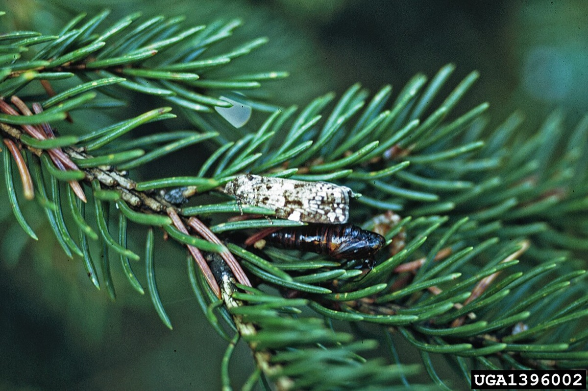
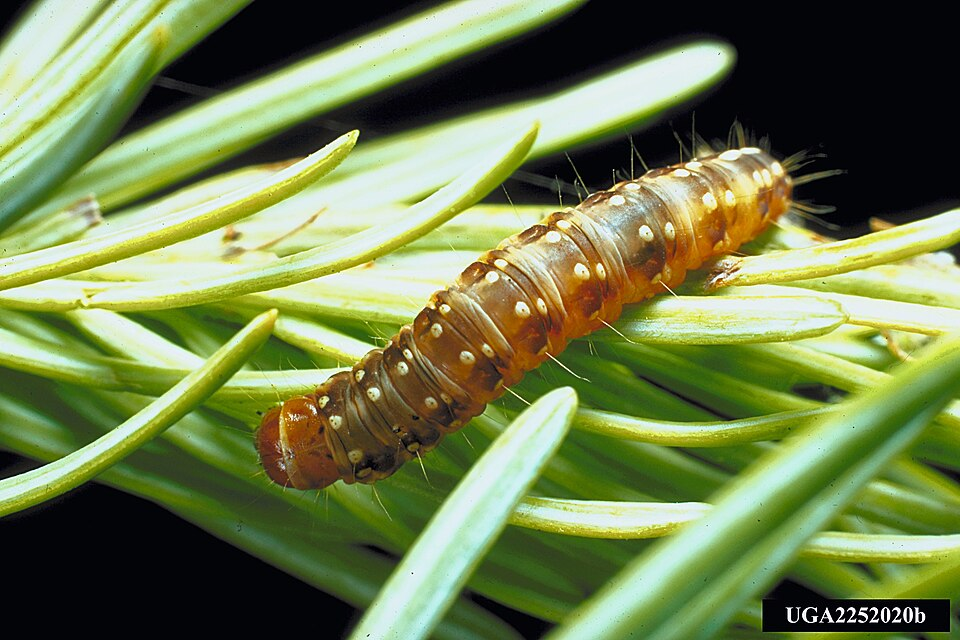

Spruce Budworm
Choristoneura fumiferana


- Also called
- Eastern spruce budworm, SBW
- Group
- Insects and Ticks
- Kind
- insect
- Native to Vermont
- yes
- Legal status
- Native softwood defoliator; not regulated. Monitored by FPR's Forest Health program. (checked 2026-10-30)
Names
Spruce budworm (SBW), Choristoneura fumiferana, a native moth whose caterpillars eat the needles of spruce and fir. The FPR table lists it as eastern spruce budworm on balsam fir and spruce in northern Vermont.
Range and habitat
Hosts: balsam fir and spruce, and occasionally larch, pine and hemlock (FPR 2023 report). The trap sites that report are in the northeast and northern part of the state (Essex, Orleans, Caledonia and Chittenden counties).
Through the year
No seasonal dates are recorded for this note yet.
Signs on the land (tracks, scat, browse, nests, holes, calls)
Defoliation of fir and spruce crowns. In consecutive years of severe outbreaks, trees may be completely defoliated, which can lead to dieback and death of the infested trees (FPR 2023).
Role in the forest (what it eats, what eats it, what it needs)
Outbreaks recur. In 2022 the average catch was a historic 99.3 moths per trap; in 2023 it fell to 9.6 (FPR trap tables; the earlier years from 2010 to 2021 averaged between 0.1 and 8.3).
What helps it thrive (light, soil, shelter, food and the trees it uses)
This is a native insect that damages trees in outbreaks, so nothing here is advice to encourage it. What they say about its hosts is under Range and habitat, and the only management they give is under Managing for it.
Managing for it (habitat practices) and living with it (conflicts and damage)
The report gives no landowner advice. Fir and spruce stands matter as deer winter cover (White-tailed Deer), and the deer-yard guidance notes that spruce is more resistant to spruce budworm than balsam fir (Balsam Fir, Red Spruce). Ask the county forester about local conditions before changing management.
Sources
- Vermont FPR, Forest Insect and Disease Conditions in Vermont 2023: https://fpr.vermont.gov/sites/fpr/files/documents/2023%20Conditions%20Report.pdf
- Vermont FPR, Forest Insect and Disease Conditions in Vermont 2022: https://fpr.vermont.gov/sites/fpr/files/doc_library/2022%20Conditions%20Report_0.pdf